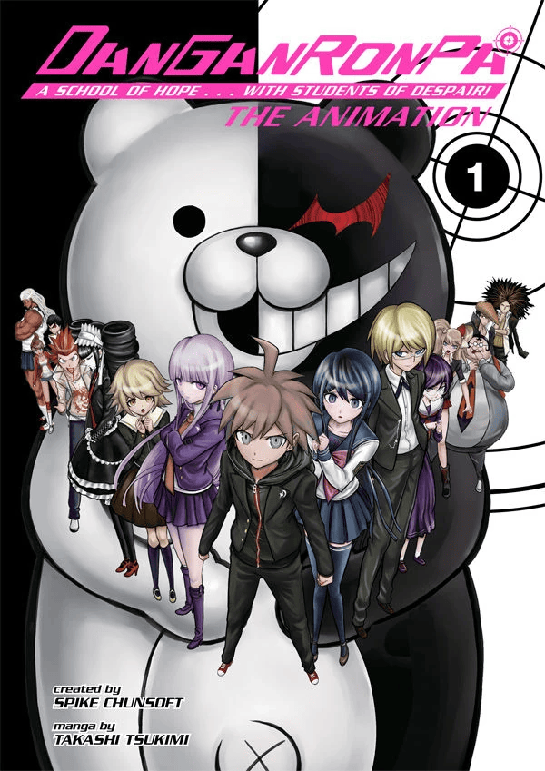
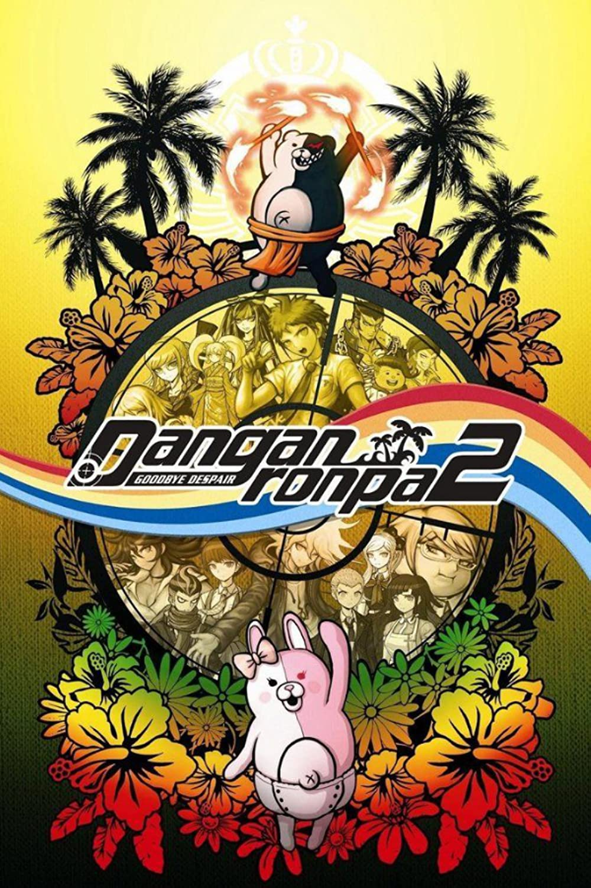

 steam button
steam button

BIENVENIDOS A LA OPINION DE LOS JUEGOS DE DANGANRONPA 1
BIENVENIDOS A LA OPINION DE LOS JUEGOS DE DANGANRONPA 2
inicio DR1
DANGANRONPA 1
pregunta1
Si, Danganronpa 1 es un juegazo. Muy divertido, es una perfecion
pregunta2
Esto no puede ser negado... Lo mejor de Danganronpa 1 es NAEGI definitivamente
pregunta3
Lo que mas odio es "Sayaka Maizono". Una zorra total
pregunta4
Obvio. Es uno de los best openings
pregunta5
Demasiado sexy para mis ojos
pregunta6
11/10
inicio DR2
DANGANRONPA 2
pregunta1
Perfecion.
pregunta2
NAGITO
pregunta3
Hinata x Nagito x Chiaki – Chiaki x Nagito
pregunta4
Hermosisimo
pregunta5
Si. (LPM QUE BRONCA COMO RESPONDE TAN FRIO.)
pregunta6
Infinito/10